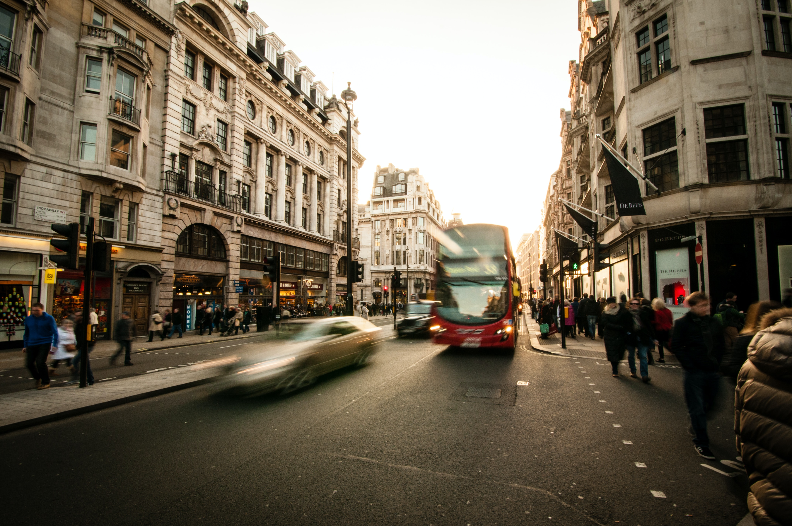

Patrick Ballantyne - Research Interests
Postdoctoral Researcher in Geographic Data Science
Retail and High Street Performance
The retail sector continues to face a number of challenges (e.g., online shopping, COVID-19, climate change), putting significant pressure on businesses and retailers to adapt to these challenges. My research focuses on how these pressures are manifesting in different spaces of consumption - e.g., retail centres, high streets, shopping centers.
Previous Research
My research has provided empirical evidence to the field of Retail Geography about the location, characteristics, performance and patronage of retail centres and high streets, building important foundations to understand how these places are transforming, and the impacts of this on local communities. During my PhD, I utilised a variety of different data and spatial modelling techniques to generate the first empirical data on retail centre geographies in the U.S. This data, which comprised retail centre boundaries, classifications and catchments represents the first attempt to provide a comprehensive empirical overview of the network of retail centres in the U.S., providing an important set of tools through which to monitor how the American retail sector is evolving.
Paper: https://journals.sagepub.com/doi/full/10.1177/23998083211040519
Paper: https://www.tandfonline.com/doi/full/10.1080/24694452.2022.2098087
My research has also contributed new ways of measuring high street performance, through the use of mobility data as a proxy for footfall in urban areas, which has historically been a challenge due to inequalities in footfall sensor coverage. Both in Chicago and the UK, mobility was used to model the response of different retail environments to the COVID-19 pandemic. In this research, we identified a series of functional, structural and socio-economic factors associated with retail decline and recovery during these periods. Furthermore, this research highlights important evidence about retail decline, and the inequalities that are evident in cities, where certain members of society are being over-exposed to declining retail environments. We also contribute important insights about the value of mobility data, and the additional considerations that are needed for proper use in research.
Paper: https://link.springer.com/article/10.1007/s44212-022-00022-0
Paper: https://www.tandfonline.com/doi/full/10.1080/21681376.2021.1973548
Ongoing and Future Research
My ongoing research focuses on how we can conceptualise and measure retail centre sustainability. Given that the long-term future of retail centres and high streets is dependent on their ability to adapt and become more environmentally sustainable, there is a need for evidence about the extent to which these adaptations are occuring, and the places where they are needed most. I plan to develop a multidimensional framework which conceptualises and measures the sustainability of retail centres from both an economic and environmental perspective. I am also interested in how we can better design our retail spaces to make them more resilient to the challenges that climate change poses, with a specific emphasis on modelling consumer behaviour during extreme weather events, and the design of spaces to be more resilient to these trends.

Social and Spatial Inequalities
Previous Research
My current work explores how we measure and conceptualise accessibility and inequality, and the existence of Social and Spatial Inequalities in cities and regions. This is a very important topic, as the intersection of multiple forms of inequality (e.g., transport and housing inequality), represents a significant source of disadvantage for vulnerable populations. In a paper that is under review, we provide an important evidence base about the existence of multiple inequalities in Liverpool City Region, assembling a series of urban indicators, and an interactive dashboard, which serve as an important evidence base for policymakers, helping to facilitate evidence-led decision making around inequality reduction. This paper serves as an important keystone for real-world impact, with the evidence base currently being used by policymakers to design creative urban planning interventions to reduce inequalities in the region. Furthermore, this research also contributes significant new insights about the use of advanced spatial modelling techniques to develop indicators of urban inequality, and the benefits of co-production and multidimensional indicators for better evidence-led urban policy.
Read about the project: https://patrickballantyne.github.io/posts/LCRCA.html
Ongoing and Future Research
Ongoing research is also building on my experience of working with POI datasets, to consider more holistic definitions of accessibility and inequality. In particular, we are exploring whether new data from Overture can provide suitable information about the locations of amenities within cities. As part of this ‘accessibility of everything’ project, we are building measures of multimodal accessibility for a variety of amenities and services (e.g., green space, coffee shops) at small spatial scales, providing a more holistic view on ‘accessibility’, that can add new insights to the ‘15-minute city’ debate. This research harmonises the two main pillars of my research agenda - Retail Geography and Social and Spatial Inequalities - as we will be developing a series of models to quantify accessibility to everyday services and amenities, understand how this relates to the characteristics of populations, and fosters inequality in cities and regions.
In the longer term, I will develop an empirical, scalable and fully replicable framework of amenity accessibility and inequality. This research, which typifies my research identity - Retail Geography and Social Spatial Inequalities - will use network analysis and other spatial modelling techniques to identify key injustices in accessibility to essential amenities and services, providing a series of actionable recommendations to support the people and places who need them most.
